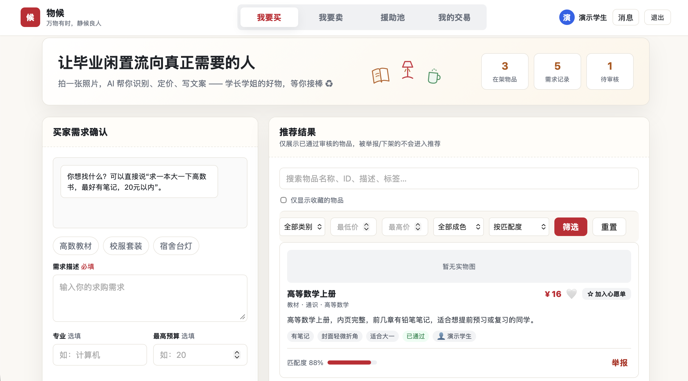
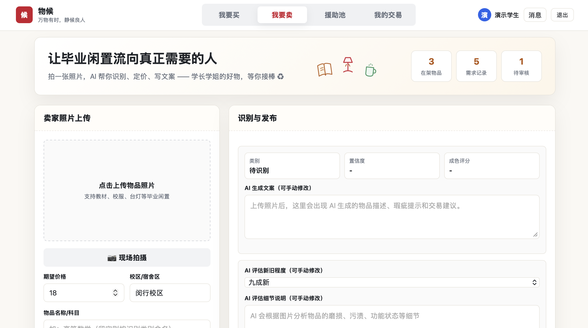
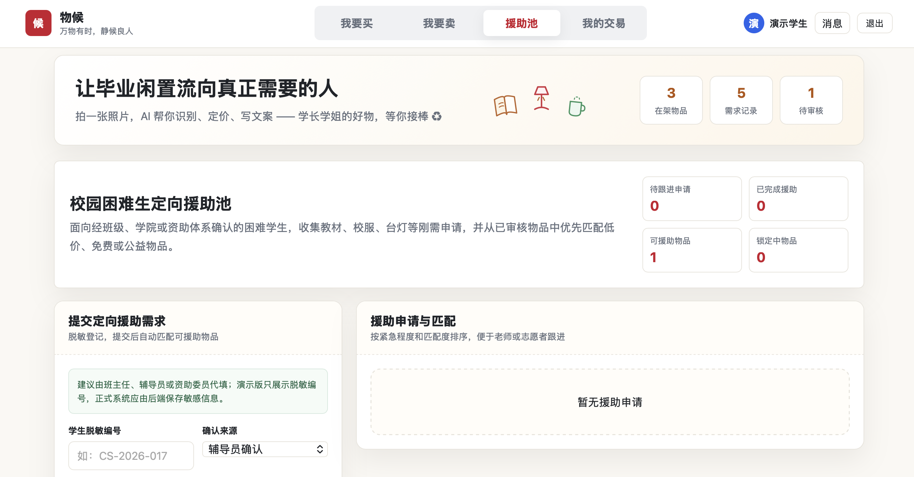
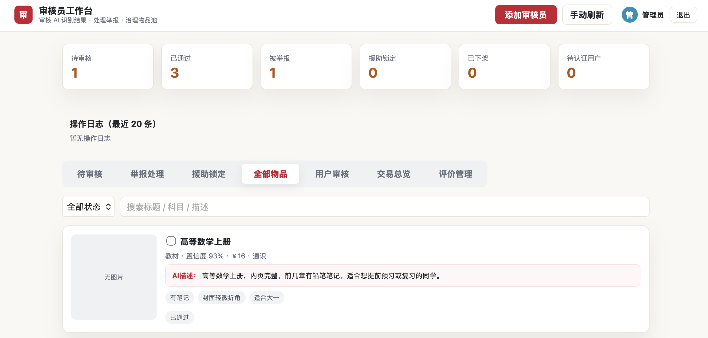

扫码或手机打开链接，三分钟走完从上架到匹配的完整流程；学生与审核员双端均可登录体验。
每年毕业季，大量教材、正装与生活物品被直接丢弃，浪费严重。
学弟学妹恰好需要这些物品，却缺乏可信的二手信息渠道。
信息不全、定价模糊、信任缺失，好物沉在信息海里。
识别分类、定价参考、暖心文案、供需匹配，一站完成。
卖家拍照上传，AI 自动识别分类并生成暖心文案；买家用一句自然语言描述需求，AI 解析后由匹配引擎推荐最合适的物品。
我要买（AI 匹配）· 我要卖（拍照识物）· 援助池（困难生定向）· 我的交易（模拟钱包与订单）。
学生认证、物品审核、举报处理、批量审核、交易总览 —— 治理闭环一站完成，平台才可信。
学生端 / 审核员端 / 个人中心，登录后按角色分流渲染。
鉴权、AI 代理、业务数据、图片处理，密钥只在服务端。
Netlify Blobs 存用户 / 会话 / 业务 / 图片；阿里云百炼提供 Qwen-VL 与 Qwen。
MediaPipe Hands 追踪 21 个手部关键点，检测上传照片中的手部遮挡并提示重拍，保障二手图片质量。
YOLOv8n 经 ONNX Runtime Web 在浏览器本地推理，零服务器开销的目标检测扩展。
脱敏订单数据送 Qwen，生成概览 / 异常风险 / 品类洞察 / 运营建议的 Markdown 报告。
买家下单，款项即时冻结进入平台托管。
卖家确认订单，交易进入履约阶段。
双方确认收货，托管款项到账卖家。
卖家拒绝或超时未响应，款项原路退回。
星级评价沉淀卖家信誉徽章。
初始额度 · 下单冻结 · 完成到账 · 取消退款
下单 / 过审 / 援助 / 心愿上新自动通知 + 未读角标
加心愿 → 需求风向标聚合计数 → 过审自动提醒

一句话需求，AI 匹配引擎打分排序

拍照上传，VLM 识别分类并生成暖心文案

困难生定向，公益加权匹配

认证 · 审核 · 举报 · 交易总览
密码 pbkdf2 哈希存储；验证码密码学安全随机生成；登录失败 5 次锁定 10 分钟，暴力破解无从下手。
完整走通「拍照 → 识别 → 文案 → 审核 → 匹配 → 交易 → 评价 → 通知」闭环；四个课程技术点全部落地，真实调用链路可查。感谢聆听。
匹配引擎从规则打分升级为语义相似度，长尾需求也能命中。
结合成色评估与历史成交，给出可信的定价参考。
触达更多校园场景，随时随地拍照上架。
托管交易从模拟钱包走向真实支付，在校园场景完成真实闭环验证。